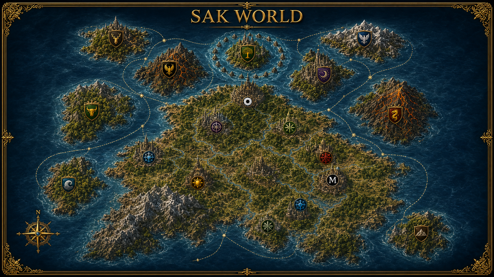

The Nine Kingdoms
- Mas Rak North-East
- Zytora West
- Octaris Sea Kingdom
- Sataron Land Kingdom
- Velron East
- Lunara North-East
- Ravaron North-West
- Taroka North-West
- Banizar South

The official world atlas
Nine kingdoms. Eighteen locations. Seven governments. Three hero bases. Explore every realm, route, and seat of power.
Explore the world ->World overview
Interactive cartography
Move across the map to inspect its royal kingdoms, central continent, governments, routes, and distant islands.
Seven seats of power